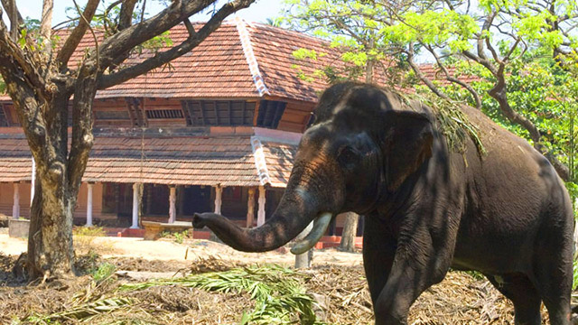

The Cultural Capital of Kerala
Known as the cultural capital of Kerala, the district of Thrissur is renowned worldwide for the magnificent festival of Pooram. It is also a center for learning some of the exquisite performing arts of Kerala as well as ancient Indian knowledge systems like Ayurveda. Thrissur has some of the popular Hindu Temples in Kerala, and the temple city of Guruvayur is a popular pilgrim center.
Top Destinations

Athirappilly
Athirapally (63 km from Thrissur): At the entrance to the Sholayar ranges, this 80 foot high waterfall is a popular picnic spot.
VilanganKunnu
Vilangankunnu (7 km from Thrissur): This is a beautiful hill which is a good picnic spot
Thrissur Zoo
Zoo (2 km from Thrissur town): Open from 0900 - 1700 hrs on all days except Mondays.
Guruvayoor
Guruvayur is a pilgrimage town in the southwest Indian state of Kerala. It’s known for centuries-old, red-roofed Guruvayur Temple, where Hindu devotees make offerings of fruit, spices or coins, often equivalent to their own weight
Puthenpally
Our Lady of Dolours Basilica alias Puthanpally is a minor basilica of the Syro-Malabar Catholic Church in Thrissur City in the Indian state of Kerala. The third tallest church in Asia, it is famous for its Gothic style architecture.
Vazhachal
Vazhachal (68 km from Thrissur): Just a short drive from Athirapally, this picturesque waterfall is close to dense green forests and is a part of the Chalakudy river. Athirapally and Vazhachal are the most famous waterfalls of Kerala which attract tourists in plenty.

Peechi Dam
Peechi Dam thrissur is situated 22 km outside Thrissur city in Kerala, India. The dam was started as an irrigation project for the surrounding villages in Thrissur.

punnathoorkotta
Punnathoorkotta (2 km from Guruvayoor): This home of 50 temple elephants offers unusual spectacles of the gentle pachyderm.
Poomala Dam
Poomala Dam is an irrigation purpose dam and a tourist spot situated in Mulankunnathukavu Panchayath under Puzhakkal block in Thrissur, Kerala State of India.
Paniyeli Poru
Panieli Poru is a tourist spot in the Ernakulam region of Kerala, India caused by a natural bottleneck in the flow of the Periyar River due to rock formations.